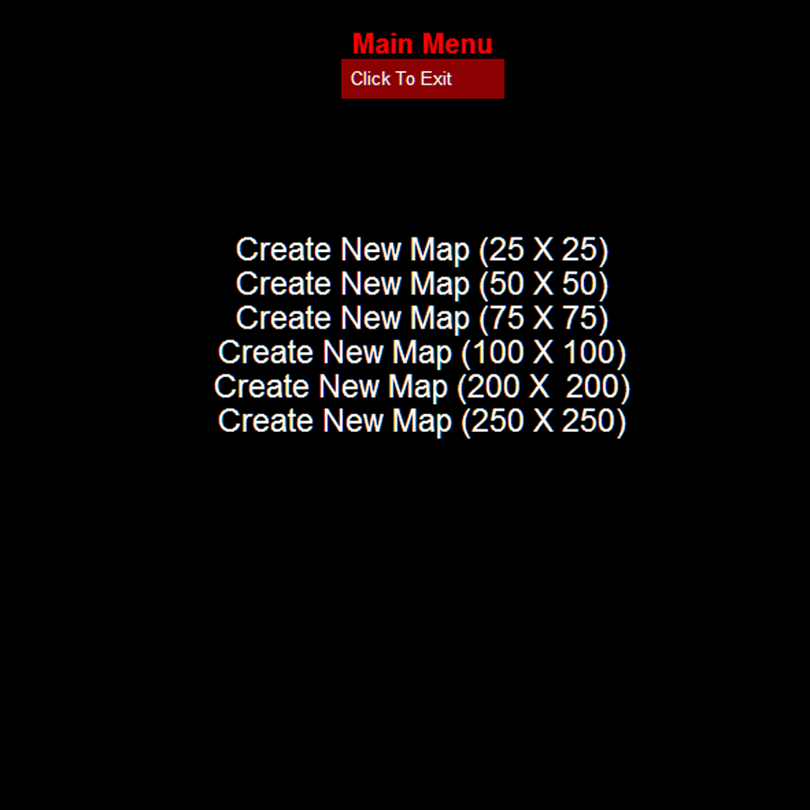
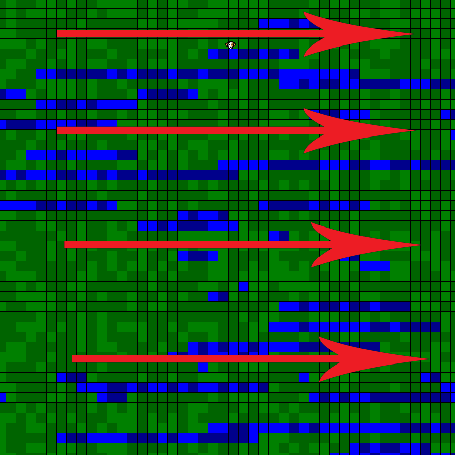
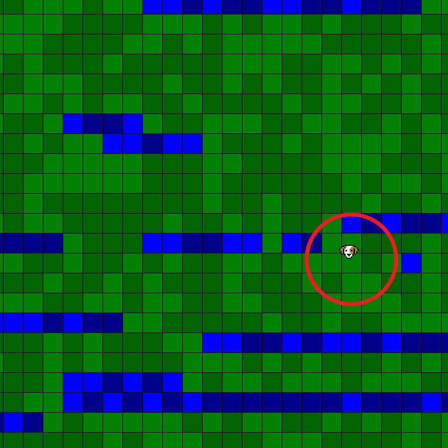

Consisting of an interactable menu, automatic map generation, and core-level wandering AI, this program is meant to harness the seemingly-random nature of AI. Written over the course of 5 days, it was my first programming interaction with Python, and introduced me to a plethora of interesting challenges and features of using Python for the task.

Designed using click-fields hard coded into the graphics. Each click returns an (x,y) point which is then analyzed to determine if it was within a field. Each click leaves a crosshair on the background, to confirm that while the click did not activate the program, it was received.
The ratio determines the # of cubes placed on the screen, resulting in smaller cubes the higher larger the selected map.

The map generator algorithm fills the map from left to right, using its knowledge of the surrounding map-pieces to create land masses, instead of a map of small and isolated slivers of land. This allows for the animal to traverse the land, and creates a more visually appealing map.
The map always fills the same window size, but adjusts the cube-size to fill with the requested number of pieces. The odds of placing a piece which is harmonious with its' surrounding pieces is significantly higher than the odds of it placing a non-homogenous piece.

The program finally spawns a creature to roam the map, with the creature’s size being comparative to the map’s cube sizes. The creature is a random walker, staying on the land pieces and avoiding the water. It has a tendency to walk upwards. On to better things, I guess!